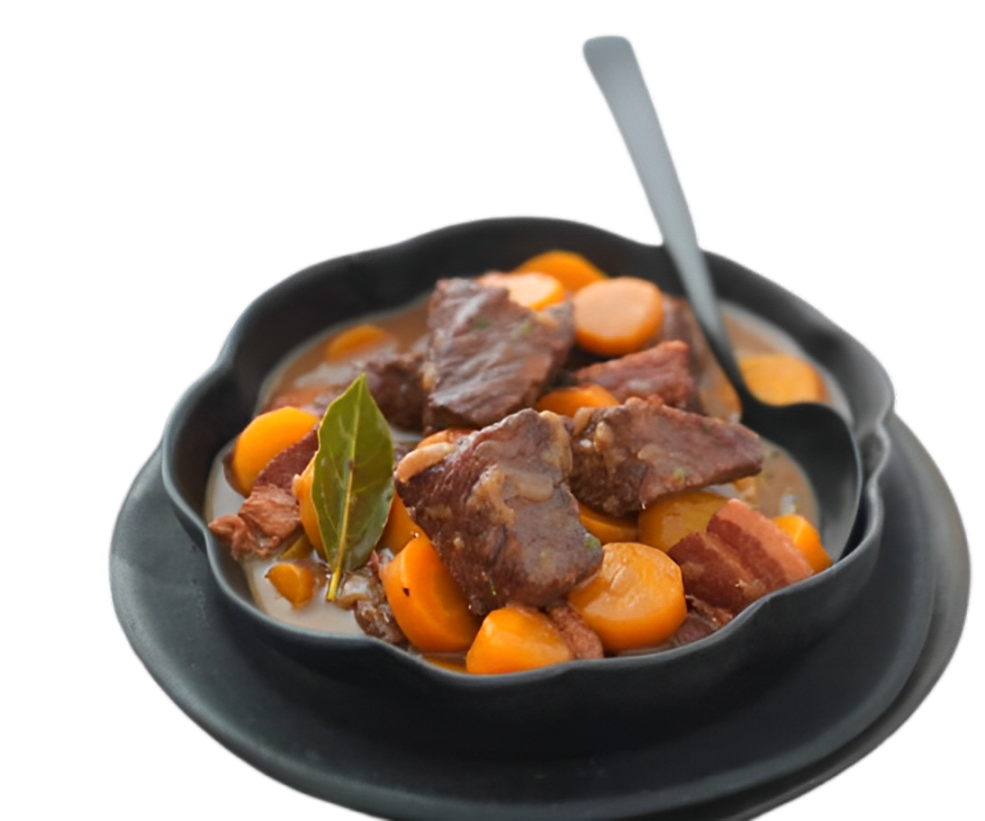
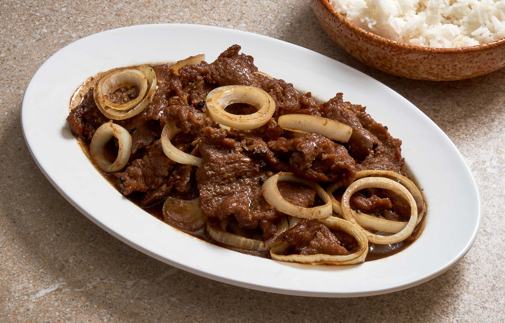
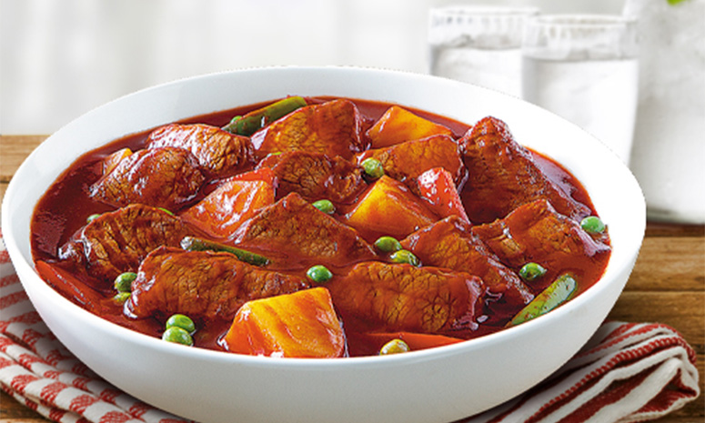
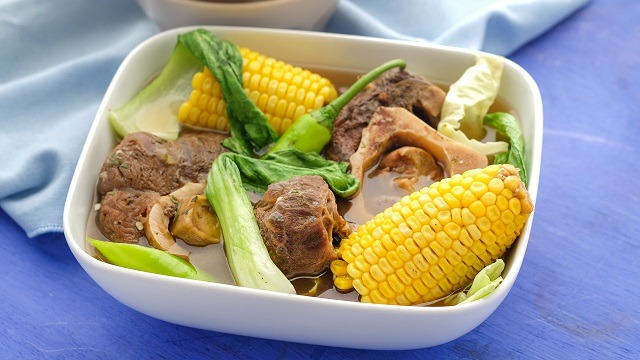

Beef Tapa:
Ingredients:
a. 1/2 kg beef (thinly sliced)
b. 1/4 cup soy sauce
c. 2 tablespoons vinegar
d. 1 tablespoon sugar
e. Garlic (minced)

Crispy, marinated beef strips with a savory, slightly sweet flavor.
Tender beef slices cooked in a savory soy sauce and onion gravy.
Rich stew of beef, potatoes, carrots, bell peppers, and tomato-based sauce.
Rich peanut stew with oxtail, tripe, and vegetables in a thick savory sauce.
Savory beef shank and bone marrow soup with corn, vegetables, and a rich broth.
a. 1/2 kg beef (thinly sliced)
b. 1/4 cup soy sauce
c. 2 tablespoons vinegar
d. 1 tablespoon sugar
e. Garlic (minced)
1. Mix soy sauce, vinegar, sugar, and garlic in a bowl.
2. Marinate the beef in the mixture for at least 1 hour.
3. Fry the beef in a hot pan until cooked through.
4. Serve with garlic fried rice and a sunny-side-up egg.

a. 1/2 kg beef sirloin (sliced thinly)
b. 1/2 cup soy sauce
c. 1/4 cup calamansi juice
d. Onions (sliced into rings)
e. Garlic (minced)
1. Marinate beef in soy sauce, calamansi juice, and garlic for 30 minutes.
2. Sauté onions until soft and set aside.
3. Fry the marinated beef until browned.
4. Pour in the marinade and simmer until the beef is tender.
5. Serve topped with sautéed onions.

a. 1 kg beef (cut into chunks)
b. 1 can tomato sauce
c. 1 cup liver spread
d. Carrots and potatoes (cubed)
e. Bell peppers (sliced)
1. Sauté garlic and onions in a pot.
2. Add the beef and cook until browned.
3. Pour in tomato sauce and water, then simmer until the beef is tender.
4. Mix in liver spread, carrots, potatoes, and bell peppers.
5. Cook until the vegetables are tender and the sauce thickens.

a. 1 kg oxtail (or beef shank, tripe)
b. 2 cups peanut butter
c. 1/2 cup toasted rice flour
d. 2 tablespoons annatto oil
e. Vegetables (banana blossoms, eggplant, string beans)
1. Boil the oxtail until tender, then set aside.
2. In a pot, heat annatto oil and sauté garlic and onions.
3. Add the peanut butter and toasted rice flour, stirring to combine.
4. Gradually add the broth from the boiled oxtail to achieve the desired consistency.
5. Add the oxtail and vegetables, and simmer until vegetables are tender.

a. 1 kg beef shank
b. Corn on the cob (cut into pieces)
c. Cabbage
d. Pechay (bok choy)
e. Green onions
1. Boil beef shank in water until tender, skimming off the scum.
2. Add corn and simmer until tender.
3. Season the broth with salt and pepper.
4. Add cabbage, pechay, and green onions.
5. Serve hot with rice and fish sauce.